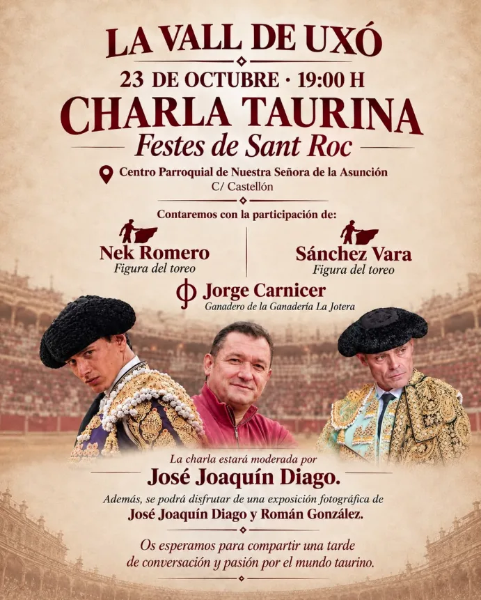

Agenda Taurina
Agenda TaurinaLa Vall d'Uixó celebra el 23 de octubre su primera charla taurina, con Nek Romero, Sánchez Vara y el ganadero Jorge Carnicer
Las Festes de Sant Roc estrenan este acto en el Centro Parroquial de la Asunción, con exposición fotográfica de José Joaquín Diago y Román González

Las Festes de Sant Roc de la Vall d'Uixó suman este año una novedad a su programa: una charla taurina, la primera que organizan en sus fiestas. Será el viernes 23 de octubre a las 19:00h en el Centro Parroquial de Nuestra Señora de la Asunción, en la calle Castellón.
Dos toreros y un ganadero
En la mesa estarán dos toreros, Nek Romero y Sánchez Vara, junto al ganadero Jorge Carnicer, de la ganadería La Jotera. La conversación la moderará José Joaquín Diago.
La organización quiere que sea un punto de encuentro para aficionados de todas las edades, desde los más veteranos hasta los más jóvenes, para compartir vivencias y conocimientos sobre el mundo del toro.
Exposición fotográfica
Además, quienes asistan podrán ver una exposición fotográfica de José Joaquín Diago y Román González.
- 📍 Centro Parroquial de Nuestra Señora de la Asunción (C/ Castellón), la Vall d'Uixó
- 📅 Viernes 23 de octubre, 19:00h
Fuente: @fiestasdesanroque (Festes de Sant Roc, Instagram).
Ver el calendario completo Ver todas las noticias